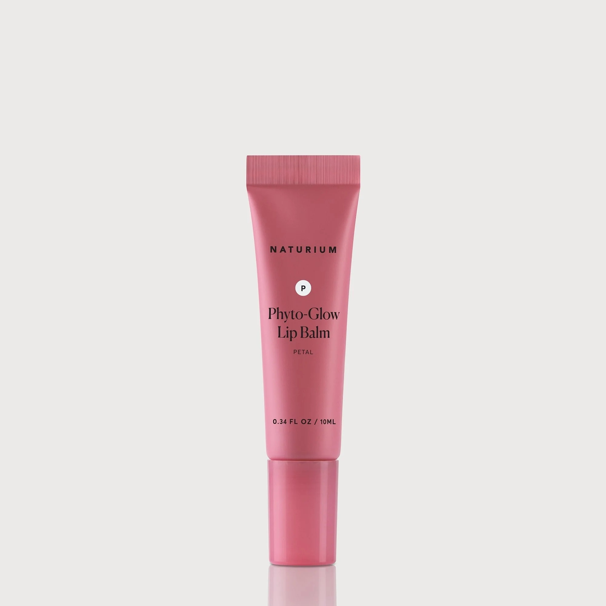

My lip balm of the week is the Naturium Phyto-Glow Lip Balm in the shade petal (it was the only one left at Target). Overall, I'd give this one an 8/10 because it is
but oh my god it is so thick!! Maybe I'm just getting spoiled by all of the lip oils on the market but it is a sensory nightmare jesus christ. Also the applicator is strange, for a product so thick I feel like a doe foot would lend itslef better to the product than the flat plastic head, which kind of just scrapes the product off.
This week my lip product has been the Tonymoly jelly, and it's one of my favorites! It has a really nice consistency, it's super thick and jiggly and I really want to eat it. It has a really nice fruity floral scent and I have the purple color, which is subtle but looks nice. My favorite thing about this one is how moisturizing it is. I feel like I really notice a difference in how dry my lips are once this product has come off. Since it's so thick, it lasts quite a while and doesn't leave that weird rubbery feeling after a while. I brought this with me and wore it on a plane, which I feel like is a good indicator of how much I like this product. 9.5/10 for this one!
TL;DR:
The NYX Fat Lip Oil in shade Status Update is my lippie of the week! TBH I only grabbed this one because it was in the bottom of my girlfriend's purse and my lips were so dry it was making me tweak. I think this gloss is nice, it's shiny, it's a nice color, and it was the only one available to me. It's dependable, but nothing super special. The color is pretty, and when these first came out I loved them and bought one in every single color. But now I'm not getting excited to use them anymore. 6/10
TL;DR: